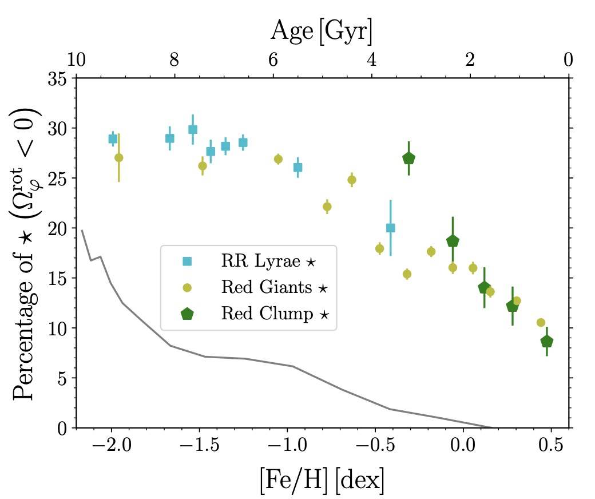

The Galactic bulge exploration: V. The secular spherical and X-shaped Milky Way bulge
 In this fifth paper of the series, I focused on the full 6D spatial and kinematical distribution of RR Lyrae stars in the Milky Way’s central region. I discovered a dominant population of stars on retrograde orbits forming a nearly spherical, centrally concentrated structure. Their stable, non-chaotic motion suggests a long-lived, secular component of the bulge. These findings challenge classical interpretations and offer new insights into how internal Galactic dynamics can shape spheroidal stellar populations over time.